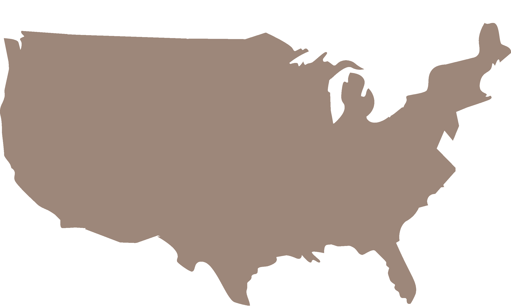
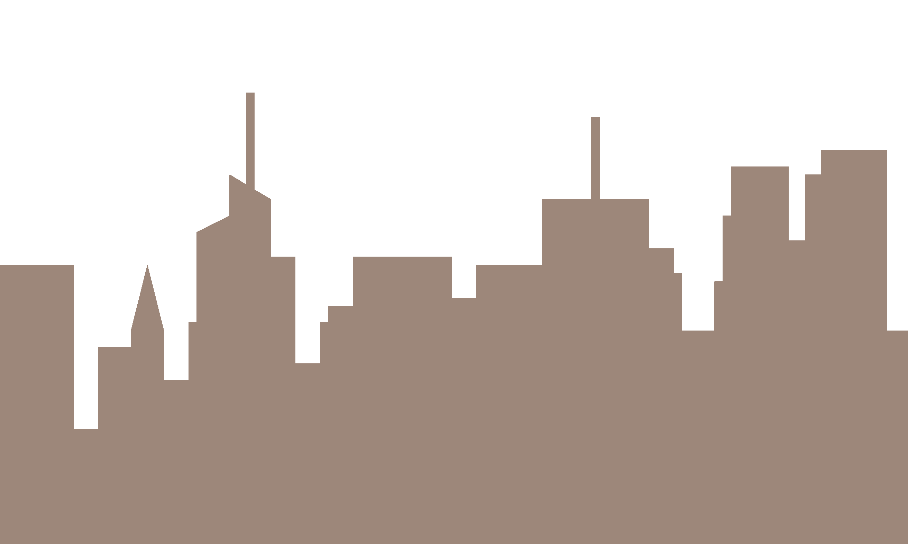
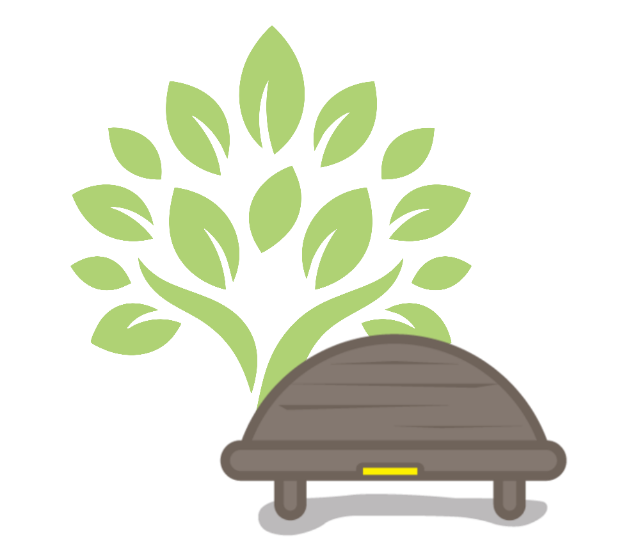

The Santa Rosa Labyrinth
University
College Park, MD
A stone walking labyrinth on campus—one path in, one path out, and no wrong way to walk it.
Tended by Dr. Renee Okafor
We help communities create and sustain Sacred Places: small greenspaces made for a pause, each with a bench and a Little Yellow Journal, in the neighborhoods, schoolyards, and hospital grounds where people already find themselves. Then a local Firesoul™ keeps each one alive. Because moments of calm and connection are where joy begins.
We believe everyone deserves access to nature, reflection, and healing
—nearby.
The care it takes to create a Sacred Place matters as much as the care that keeps it alive for years after. This is where the science meets the soul.

We guide communities through a collective, community-engaged design process—co-creating each Sacred Place with the people who will use it, in schoolyards, cemeteries, hospital grounds, and more.
We stay for the life of each place. Through the Firesoul Network, the community leaders who tend these Sacred Places get connection, capacity-building, and Enrichment & Enhancement grants—so every Sacred Place stays cared for over time.
We share what Sacred Places teach us. Through research, the stories left in the journals, Care Packages, and a national network, we help more communities see what thoughtful greenspace can do.
Thirty years of listening, since 1996—held in the science, and in the journal entries people leave behind.
Our impact →

A Sacred Place works as a community intervention: health, environmental, and equity gains compound—three returns on a single investment.
Why Sacred Places →A meditation garden within the walls of a prison. A quiet bench on a reclaimed urban farm. A therapeutic healing garden on the grounds of a hospital.
A stone walking labyrinth on campus—one path in, one path out, and no wrong way to walk it.
A therapeutic garden where patients, families, and staff step away from the ward and into open sky.
A downtown gathering place where a Nature Sacred bench anchors a busy urban corner in quiet.
Every Sacred Place has a community leader who was there before we were. The Firesoul Network connects them to one another, so they share what they learn, grow together, and reach further than any one could alone. We support them for the life of the Sacred Place.
Explore the Network →At the heart of each space sits a Nature Sacred Bench—its curved back the shape in our logo. Tucked beneath it, is a Little Yellow Journal. Visitors leave what they carry: grief, gratitude, a passing thought. Over 30 years, those pages have gathered a record of nature quietly doing its work.
"In the midst of pain, anger and frustration, this is an oasis of calm and beauty."
Baltimore, MD
Our own dispatches from the people tending these places—and the coverage these places are earning beyond us.
Explore all News & Stories →